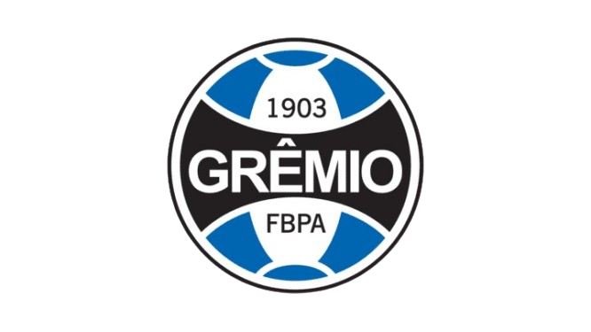

Grêmio Foot-Ball Porto Alegrense
O Grêmio surgiu em Porto Alegre por iniciativa do paulista Cândido Dias da Silva. A história é curiosa: durante uma partida de exibição de futebol na capital gaúcha, onde a bola estourou, Cândido emprestou a sua para que o jogo continuasse. Ao final, os jogadores ensinaram-lhe as regras do esporte e como montar um clube. Assim, com trinta e dois participantes presentes, em 15 de setembro de 1903, fundou-se o Grêmio Foot-Ball Porto Alegrense.
História do Grêmio
Nas duas primeiras décadas de existência, o Grêmio era um time amador, embora disputasse alguns jogos. Após esse período, iniciou-se uma fase de profissionalização, e o Grêmio consagrou-se como um dos grandes times brasileiros. As cores representativas do clube são o azul-claro e o branco.
Atualmente, o uniforme oficial de jogo é composto por camisa com listras verticais azuis, brancas e pretas, calção preto e meias brancas com detalhes azuis. Esse uniforme é bem diferente do primeiro oficial, que consistia em meias e calção brancos e camisa vermelho-escura com listras horizontais brancas e pretas.
A primeira bandeira do clube era listrada de azul, preto e branco, com o símbolo no canto superior esquerdo. Porém, a utilizada hoje tem um fundo azul cortado por listras finas na vertical, horizontal e diagonais, que se entrecruzam no centro da bandeira, onde se localiza o símbolo do Grêmio.
Títulos do Grêmio
- Mundial Interclubes: 1983;
- Copa Libertadores da América: 1983, 1995 e 2017;
- Recopa Sul-Americana: 1996 e 2018;
- Campeonato Brasileiro: 1981 e 1996;
- Supercampeão do Brasil: 1990;
- Copa do Brasil: 1989, 1994, 1997, 2001 e 2016;
- Campeão Brasileiro (Série B): 2005;
- Campeão da Copa Sul-Brasileira: 1999;
- Campeão da Cidade de Porto Alegre: 1904, 1905, 1906, 1907, 1909, 1911, 1912, 1913, 1914, 1915, 1919, 1920, 1921, 1922, 1923, 1925, 1926, 1930, 1931, 1932, 1933, 1935, 1937, 1938, 1939, 1946, 1949, 1956, 1957, 1958, 1959, 1960, 1964 e 1965;
- Campeão Gaúcho: 1921, 1922, 1926, 1931, 1932, 1946, 1949, 1956, 1957, 1958, 1959, 1960, 1962, 1963, 1964, 1965, 1966, 1967, 1968, 1977, 1979, 1980, 1985, 1986, 1987, 1988, 1989, 1990, 1993, 1995, 1996, 1999, 2001, 2006, 2007, 2010, 2018, 2019, 2020, 2021, 2022 e 2023;
- Copa FGF: 2006;
- Taça Fernando Carvalho: 2010;
- Recopa Gaúcha: 2019, 2021, 2022 e 2023.